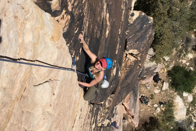

Скалолазание
Скалолазание привлекает многих людей, однако перед тем как начать им заниматься, неплохо бы определиться с целями. Зачем вы хотите заняться скалолазанием? Просто для того, чтобы поддерживать свое тело в хорошей спортивной форме или вы хотите посвятить себя спортивной карьере? Чем более четко поставлена ваша цель, тем выше шансы ее достигнуть. Итак, давайте поговорим о том, какие цели может ставить перед собой начинающий скалолаз.
Скалолазание как хобби
Помимо своей несомненной пользы для организма, скалолазание также является очень интересным и захватывающим видом спорта. Если посещение тренажерного зала рано или поздно становится рутинным процессом, которым приходится заставлять себя заниматься, то каждое посещение скалодрома – это практически праздник, которого ждешь с нетерпением. Кроме того, скалодром – это место где всегда можно найти новых интересных друзей с общими интересами. С такими друзьями приятно не только позаниматься на скалодроме, но и отправиться в поездку на настоящие скалы, как в России, так и за рубежом.
